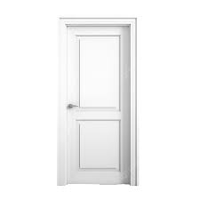

⬅
Jogo das portas de Marilyn Vos Savant

- Existem três portas: atrás de uma delas está o prêmio, que é um carro; atrás das outras duas, cabras.
- Você escolhe uma porta.
- O apresentador, que sabe onde está o prêmio, abre uma das outras duas portas e mostra que há uma cabra atrás dela.
- Dando a você o conhecimento sobre uma das portas erradas, restando apenas uma correta e outra errada.
- Agora você tem a chance de manter sua escolha ou mudar para a outra porta restante.
- Por fim, revelamos se você ganhou ou não!
- Jogue e teste se há uma estratégia com maiores chances de vitória!
Jogar!